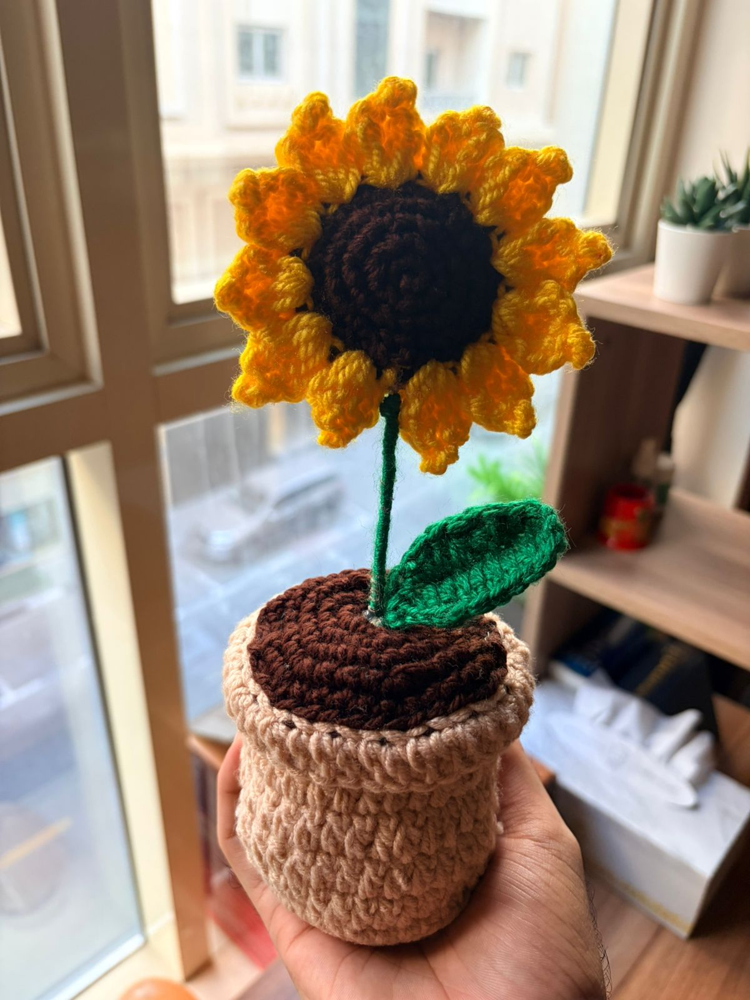

You are as beautiful as this flower, but unlike the petals, your beauty never fades.
I chose a sunflower because it always turns toward the light—just like I’m always drawn to you.
This sunflower is bright, but it’s still not as radiant as your smile.
You’re like sunshine in human form; you make everything around you brighter just by being there.
Every stitch in this flower was made with care, just like every memory I have of you is special to me.
Just like this crochet flower, my feelings for you are handmade, unique, and built to last forever.
I wanted to give you a flower that stays as perfect as you are every single day.
In a world full of roses, you’re my sunflower—bold, bright, and one of a kind.
You have a heart of gold, just like the center of this flower.
Giving you this is my way of saying thank you for being the 'sun' in my life.